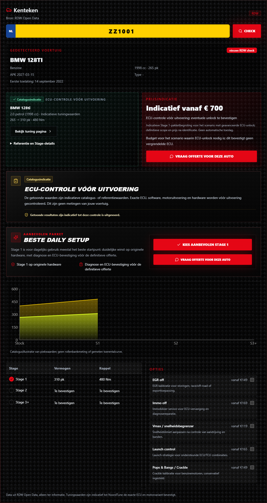

BMW 128ti · 310 pk / 480 Nm

Transit Custom · 190 pk / 440 Nm

Transit Connect · 125 pk / 330 Nm

Historical checkpoint: archived screenshot links preserve the exact original bytes at commit 0c096a0. Local images remain representative checkpoint evidence. See the latest final accuracy review for current results.
Sanitized official vehicle facts. The added power and torque figures are tuner-published references, not NoordTune measurements. Transit Connect is explicitly conditional on confirming the pre-facelift 1.5 TDCi engine. Higher stages without published figures stay unfilled while Stage 1 remains available.
